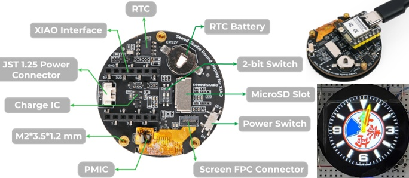

😃 XIAO C3 Watch 一鍵燒錄
👍 新北市泰山高中電子科王順泰/陳致中老師教學專用
Round Display for Seeed Studio XIAO 搭配 XIAO ESP32 C3/S3均可使用
圓形顯示器新版中央新增了一個 2 位元開關，用於控制螢幕背光和電池電壓讀數
註：範例使用的 Wi-Fi 帳密為 TSSH/12345678，連線成功才會自動更新網路時間

請使用 Chrome 瀏覽器並連接您的開發板
開始連線並更新